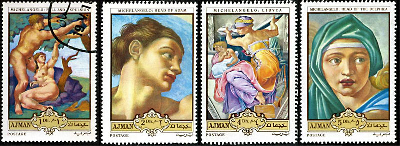
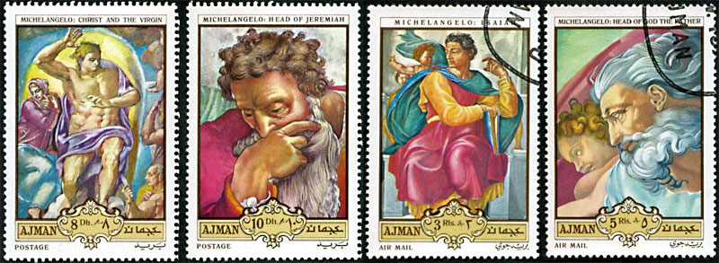
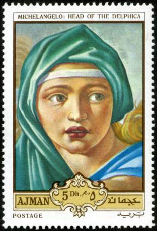
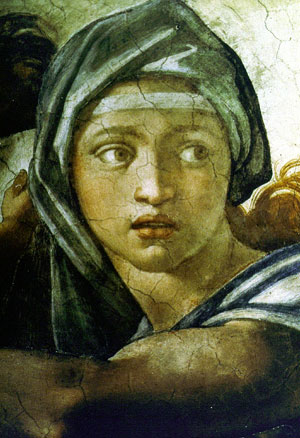
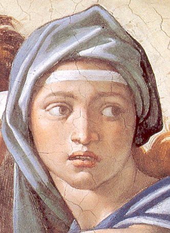
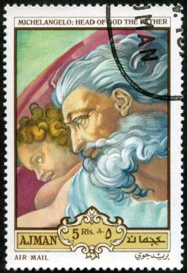
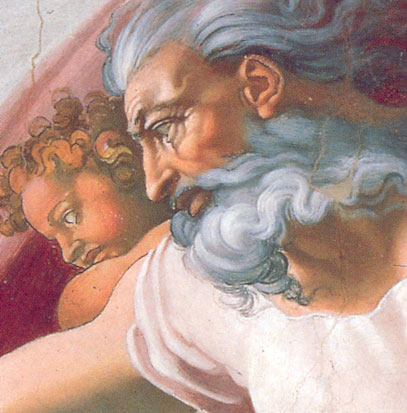
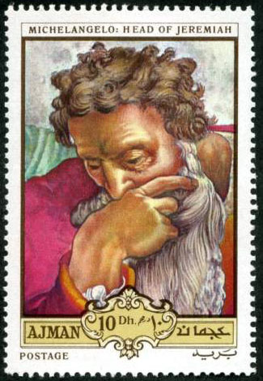
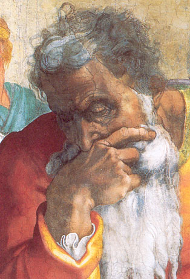

| Published:
03/08/08. Revised:
12/04/08. Copyright © 2008 by Victor Manta, Switzerland. All rights reserved worldwide. |
|
Sistine on... Dunes
The set below was issues by Ajman on May 15, 1970, No. 516 - 523, Michel Naher Osten catalogue 1999. It was, and still is, one of the few sets that displays portraits based on the renown frescoes, painted between 1508 - 1512 on the Sistine Chapel ceiling, Vatican, by the Italian artist Michelangelo Buonarroti (1475 - 1574). I 'm aware of these stamps since my youth, a time when they were already considered, and for good reasons, as being rather cinderella then real postal stamps.

Many stamp collectors criticizes these kind of stamps, because of their suspect origin but also for their colors, that are considered as untrue when compared with the original paintings. We will concentrate in this short article only on their colors.

Please take a look below at the head of the wonderful Delphic Sybil, a prophetic women of the classical world. On the left we show the Ajman stamp, in the middle an image of the painting before its restoration, and on the right the same image after the restoration (that started in 1980, which means after the issuance of the set). This is the worst case of the whole set, because it is quite obvious that the color of the head kerchief seems more or less invented (and rather ugly).
 |
 |
 |
But the situation is quite different for the image below, where the reproduction of colors for the Head of God stamp is not so bad. Please notice again that the image on the right wasn't known in 1970 by the producers/designers of the set.
 |
 |
We can only say the same thing about the image of prophet Jeremiah, a case when the colors of the stamp are not bad at all when compared with the restored painting. The same can be said also for several other pieces of the Ajman set, that we compared with the restored images.


We have also compared these stamps with some other ones, dedicated to the Sistine Chapel, issued by Burundi, Paraguay, etc. before the paintings were restored. Our conclusion is that the Ajman stamps are often better then the cited ones, and are among the few that display in quite a big format the great portraits, painted by a genius 500 years ago.
Some consideration about the causes and the consequences of Dunes and similar stamps
The Dune stamps appeared because there was a big demand for nice and interesting topical stamps, in big format, a trend actually started by some serious postal administrations (PA) like that of Japan and France. Unfortunately, the PA worldwide haven't followed the trend, or only very slowly. As a proof, take a look at the 1970's stamps of Italy (the biggest "reservoir" of largely demanded classic art), or even of some related, issuing entities for stamp collectors like San Marino or Vatican, and you will see what a big market was neglected then by the PA, and incredibly fast filled by some private companies. The consequence was that so many (often nice) stamps appeared with the names of totally unknown countries on them (have you heard of Umm al Qiwain before?), and the big philatelic chaos (allgemeine Verunsicherung - the general insecurity) begun then.
Many of Dune stamps were printed in communist countries like Poland, Hungary and Romania, for the reason that the labor was cheaper there, and because the then rulers desperately needed clean foreign currency for their expansion plans. The printing equipment was delivered by Western companies, that then distributed the resulted products to stamp handlers worldwide. The advantage of Central-Easter Europe PA was also that they could print their own stamp on modern printing machines, and use the same big companies for the distribution of their own products. This way they invaded the market with their mass stamp production too. This was a second reason for the allgemeine Verunsicherung, because the policies of these countries could not be objectively verified in what concerned the printed quantities, prices, etc.
Postal administrations and persons responsible for philately, don't blame the computerized games or Internet for the shrinking of the thematic philately but better look back at your own past policies and inertia! The fact that today the PA produce (thanks to globalization and concentration of printing) extra-large quantities of stamps, doesn't compensate for the lack of confidence of knowledgeable stamp collectors, confidence that vanished gradually, and possibly irremediably.
So that even today you have good reasons to look so upset, Jeremiah, because your Father, shown on the stamp situated above you, said to you a long time ago: "You will go to them; but for their part, they will not listen to you"...
Q & A Time
Are these stamps soooo bad? The answer is no.
Should I collect such stamps? The answer is yes, but... only if you like them and if you can get them for a handful of $$ or even cents (for CTO's).
Credit for the Ajman stamps scans: Rodney from Australia, RCSD newsgroup.
| Published:
03/08/08. Revised:
12/04/08. Copyright © 2008 by Victor Manta, Switzerland. All rights reserved worldwide. |
|